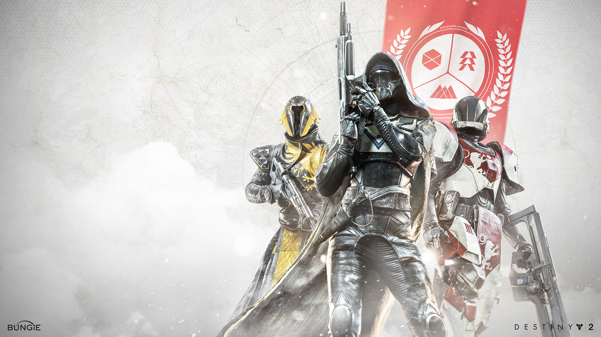

Destiny 2 has three main classes each of which have their own unique subclassess and abilities. The three main classes are Titan, Hunter and Warlock. Their abilities are all classified by the element they use being either: Arc; Solar; Void, and since Destiny 2: Beyond Light, Stasis.